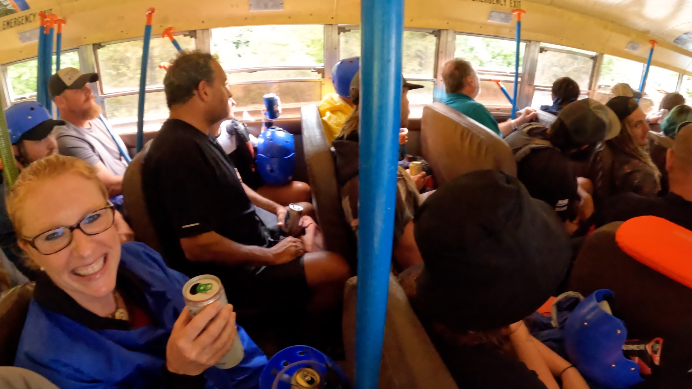

Adventures on the Gorge
I spent the weekend at Adventures on the Gorge with my girlfriend, Liz. We are both pretty adventurous and wanted this type of thrill. The check-in process was easy, and the front desk folks were very pleasant. We camped on the resort property the first night in one of the many camping areas. The facilities were pristine and well maintained. Our guide, KP, was highly knowledgeable and fun to chat with on this trip. Overall, the river and rapids exceeded our expectations, and we would 100% make this trip again. We are already planning for more!
Deluxe Gauley River Overnight
Let me start by stating that the Gauley River Deluxe overnight trip was fantastic!
TLDR Version
- It’s worth it.
- There is plenty of beer.
- People are super funny and friendly.
- If you are athletic at all, you don’t need experience.
- Will you be tossed out of the raft? Most likely. I bet at least 60% of the rafters got tossed out at least once.
- Camping at the resort is available (lodges too). It’s about $40 a night for basic camping.
- Hot showers at the resort.
- Hot showers on Delux package.
- Plenty of parking.
Sliders at Rendezvous Lodge Bar
After the rafting trip, we were hungry. So we walked to the Rendezvous Lodge Bar and ordered sliders. The sliders were pretty big, and it was plenty for two people. Not bad for $3 bucks! The sliders were delicious. Of course, they also had an excellent beer selection and affordable prices.
At the bar, there was also live music playing (@GrizzleyGoat), a good amount of people, and everyone seemed friendly. They have a cornhole area, a fire pit, and a volleyball court. Everything you would expect outdoors to be.
Other dining options:
As an Amazon Associate, I earn from qualifying purchases. I used this battery pack and GoPro Hero 10 to film this adventure.
Chetty’s Pub
Chetty’s is a fantastic pub on-site at Adventures on the Gorge. Great views with an outdoor patio. On the patio, you are overlooking the mountains and the river.
This pub is where they played the rafting videos after the trip. Everyone was super excited to watch the videos and drink beer together. Most of the guides showed up for the after party.

The morning of the trip
They asked us to show up an hour early instead of 9:30 AM, so we arrived around 8:30 AM. This allowed plenty of time to grab some wet suits (you can rent them on site the morning of - at least we did). We paid $88 for two wet suits and two jackets for two full days. Of course, they are cheaper if you rent for a single day. Either way, we are glad we brought them for the first day. The second day was warmer, so there was no need for them. Still worth it.
Grab the gear from your car that you want to have on the campsite for the overnighter. We just piled it all in the Uhaul.
If I were to make this trip a second time, I could have shown up at 9:15 and made the trip with no problem. However, arriving early to the meetup point is best because you never know.
Upper Gauley
A little practice run before the rapid. All the rocks have names. “If a rapid is named after you - you did nothing good.” - @KPRaftGuide
Lost Paddle - Named after the first female raft guide down the Gauley. She lost her paddle. It was hung above the rapid until someone stole it.
Camping and Food
Gravel tent area, covered picnic tables, big fire pit. Hot showers. Great food. Lots of beer. Lots of place to party and places to chill and relax. You can even go for a hike.
.JPG)
.JPG)
Lower Gauley
Ray Ray
Ray Ray all day. This guy was so hilarious that he gets his very own section in this post. I laughed at 100% of his jokes, and he told them nonstop. I would have thought he was a comedian. He’s serious but funny. He made clear that he does not want you to drown on that river. The hand of God will not save you, so swim away from the rocks!
Ender
The bus had a cooler full of beers and KP kept handing them out to whoever wanted them. He kept saying, “This is the last one!” Well, he was actually yelling it out. Then, 20 seconds later, more beer came out. This repeated over and over again. I had maybe five or six beers on the 45 minute ride back. I was thirsty!
